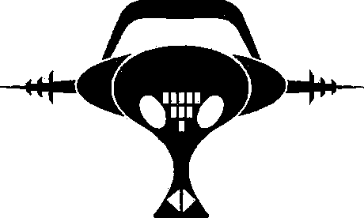

Tag systems
A Tag system is a FIFO(First in, first out) queue rewriting language made of rules where a symbol is read at one end of the queue, and the result pushed at the other end. An interesting attribute of this rewriting system is that there is no rule search due to the left-hand side of the rule being a fixed-length.

A 2-tag system, like the system described below, reads a symbol and deletes the following one. A 3-tag system, would read a symbol and delete 2 symbols.
Playground
Evaluation consists of reading a single symbol at the left of the queue, loading its associated rule and putting the right-hand side of the rule at the end of the queue. If there is no rule associated to the symbol, halt.
Logic
We can think of the and logic gate as a set of rules that will end in either a true or a false state:
x >> T. y >> T. o >> F T >> Q F >> Q
x.y.
y.T.
T.T.
T.Q ; True
QQ
x.o.
o.T.
T.F
FQ ; False
Q
Loops
Let's imagine a nested loop like while(i++ < 3) while(j++ < 3), we'll have a set of rules to move between the iterator states:
0 >> 1. 1 >> 2. 2 >> 3.
0.0.0.
0.0.1.
0.1.1.
1.1.1.
1.1.2.
1.2.2.
2.2.2.
2.2.3.
2.3.3.
3.3.3.
Binary Adder
1 >> 1. + >> 1
1.1.1.+.1.1.
1.1.+.1.1.1.
1.+.1.1.1.1.
+.1.1.1.1.1.
1.1.1.1.1.1
1.1.1.1.11.
1.1.1.11.1.
1.1.11.1.1.
1.11.1.1.1.
11.1.1.1.1.
.1.1.1.1.1.
- Tag Systems, Wikipedia